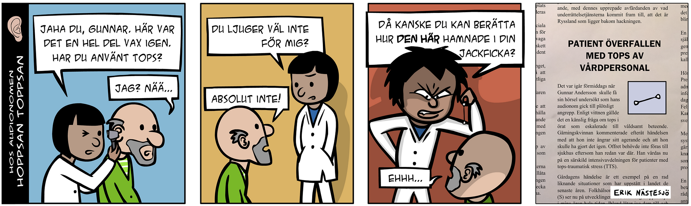

Jag
Jag heter Erik Nästesjö Todd och kommer från Jönköping. Jag bor med min fru och katt i Jämjö som ligger lite utanför Karlskrona. Min favoritsyssla är att skapa spel. Jag programmerar, ritar, animerar och spelar in musiken själv.
Fram till nyligen jobbade jag på Kalmars hörselvård som audionom vilket jag utbildade mig till i Lund. Under min fritid fick jag upp ögonen för programmering och lärde mig grunderna i C# för att skapa spel. Till slut beslöt jag mig för att satsa på detta och jag sökte programmet Technical artist i spel på BTH. Tyvärr lades programmet ned på kort varsel men jag hade tur som sökt webbprogrammering som plan B. Tack och lov så trivs jag väldigt bra hittills.
Så där är jag nu. Jag och min fru trivs mycket bra i Jämjö och jag hoppas (och tror) att jag även kommer fortsätta att trivas med mitt studieval.